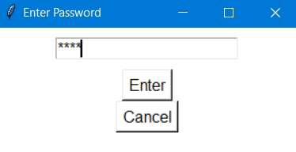

| Procedure ID | proc_configure_barcode_interface_scanner_settings_http_opc_prefixes_v1 |
|---|---|
| Title | Configure Barcode Interface scanner settings (password, prefixes, HTTP/OPC URLs) for AGV and Hospital control IPs |
| Procedure Type | operation |
| Primary Role | L1_support |
| Support Safe | Yes |
| Capability Tags | gateway_health |
| Access Surface | apidog |
| Audience Roles | L1_support |
| Failure Pattern Tags | None |
| Validation Status | needs_sme_review |
| Merge Status | source_finalized |
On the Windows laptop used for scanner setup, update the replacement Zebra DS3608-SR scanner’s Barcode Interface settings so tote/location label prefixes match and the HTTP/OPC URLs point to the correct AGV control and Hospital control IP addresses, then save the settings.
Use when a scanner is replaced and the new scanner must be set up so Barcode Interface settings use the correct tote/location prefixes and the correct AGV/Hospital control IP addresses in the HTTP and OPC URL fields.

Responsible role: L1_support
Instruction:
On the Windows laptop used for scanner setup, launch the Barcode Interface application (Barcode Interface.exe).
Expected result:
Barcode Interface is open and ready for interaction (scanner setup workflow visible).
Responsible role: L1_support
Instruction:
In Barcode Interface, click the "settings" button and supply the default password "Opti".
Expected result:
The settings panel accepts the password and the settings fields are available for editing.
Responsible role: L1_support
Instruction:
Verify the configured prefixes match the labels on the totes and locations.
Expected result:
Prefix values shown in the settings match the tote/location label prefixes you physically verify.
Stop or Escalate If:
Responsible role: L1_support
Instruction:
Change the URL for both the HTTP and OPC settings so the HTTP URL contains the AGV control IP address and the OPC URL contains the Hospital control IP address.
Expected result:
HTTP URL field includes the AGV control IP address; OPC URL field includes the Hospital control IP address.
Stop or Escalate If:
Responsible role: L1_support
Instruction:
Save the settings using the "Save Settings" button.
Expected result:
Settings are saved (the updated prefix/URL values are committed after clicking "Save Settings").